此页主要为本人的一些游戏短评。主要以ACG作品为主，也有少量日式rpg类测评。
想来，自高校生时接触ACG文化至今 ，接触过的作品与同人也有一定数量了，游戏这项媒体，对我而言的意义已经超越了打发时间，它令我深省，可以考据，可以感动。在快速国际化的当今中国大陆，ACG文化迅速发芽滋长，可这种超前的发展速度却带来了国内浮躁的ACG市场，同人文化的缺失，这是令我感到痛心的。大陆的漫展往往受到资本主导，以Cosplay和签售为主，人们乐于收集各种溢价的周边。受政治文化因素影响，很难建立供爱好者自由交流的平台。
站长是一个资深的海猫迷，《うみねこのなく頃に》（海猫鸣泣之时）是日本同人社团07th Expansion开发的一款文字冒险类游戏，于2007年8月17日发行。我高中时接触到这部作品，海猫背后的思想对我的影响很大，所以我选择了游戏发生的舞台“rokken jima“（六轩岛）作为博客的主题，海猫的同人算是我接触到的国内质量很高的同人圈了，海猫和寒蝉可以算是我失落、沮丧时坚持下去的动力。敝站的宗旨，在于借由这个网站的内容，传达龙骑士07所欲给予玩家们的感动。有朝一日，也许可以看到真正的ACG文化在大陆流行起来，有更多有思想深度的老游戏、老漫画被发掘，这是敝站成立的一大目的，也是站长的心愿。
ゲームの栞
共 27 篇短评
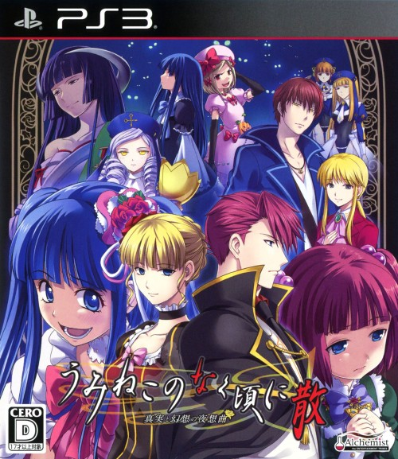
うみねこのなく頃に 07th Expansion
海猫的同人算是我接触到的国内质量最高的同人圈了，从音乐到棋盘都很精彩，龙7写海猫用了四年，我也花了三个多月才陆陆续续推完这四百万字的作品，这部参照莎士比亚《无事生非》中人物设定的同人游戏，从出题篇的文笔的波诡云谲，再到解题篇的真相大白从ep1的魔女棋盘到ep6的推理博弈再到ep8的感动，其中的悬疑诡计、迷失推理堪称一绝。虽然龙7背离了本格推理的初心，再加上大部分人诟病的画风，但瑕不掩瑜，海猫依然在同人游戏史中留下浓墨重彩的一笔。
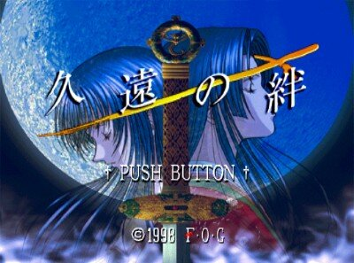
久遠の絆 フォグ(FOG)
神作。百年...貴方を待っていたの... 千年...貴方を恋していたわ...金庸曾说：有人的地方就有争斗，有争斗的地方就是江湖。此话同样契合此作——以现代世界为故事主轴，昭和、元禄、平安、神代四个世界观为辅而展开的多世界叙事，讲述了跨越了千年的人们之间的爱恨情仇与纠葛的故事。在这个力量、金钱、权力、地位、欲望……的漩涡里，神明尚且陷入其中无法挣脱，更何况凡人？人产生感情，又受感情支配。试图挣脱便注定要一生负重前行。莫说时间会冲淡以致冲尽感情，跨越了千年仍不褪色的爱与恨、渴求、憎恶…胜过一切雄辩。如此深刻，沉重，不朽。人的感情，就是这样的东西。如果你懂日文，那么这款游戏一定不会让你失望，真的推荐这款游戏，ps1上的经典之作
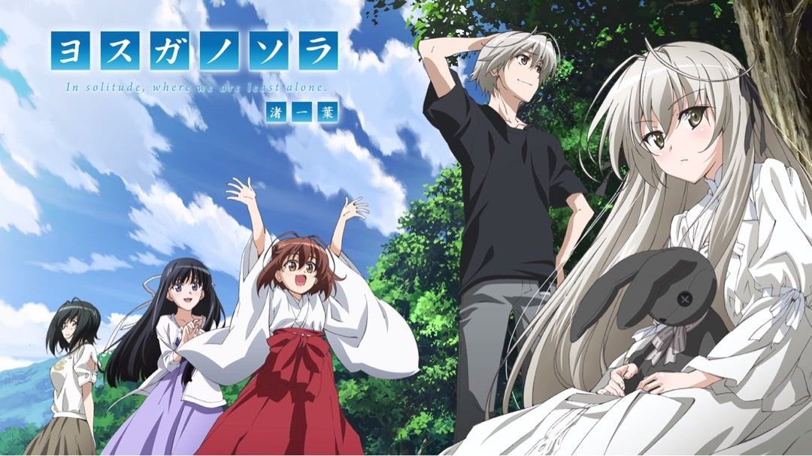
ヨスガノソラ Sphere
超超超超超喜欢的一部作品，算是我galgame的启蒙之作，时至今日动画里的穹依然是我觉得最美丽的ACG女性。论剧情我其实更喜欢动画版，妹系经典之作，并且没有止步于描写感情的深厚和妹妹的可爱，还深入探讨了伦理方面的问题，另外对环境的描写也及其令人舒适，音乐无敌，直接将观众带入进了一个静谧的夏日小镇。这部作品中的爱情是绝大多数现代人终其一生都无法的到的，平淡如水，却难能可贵。动画取景大部分在枥木县足利市桦崎八幡宫，穹的投湖处即是有名的箱根芦ノ湖，我有幸圣地巡礼了取景地，也算是了结了高中以来的一大心愿。
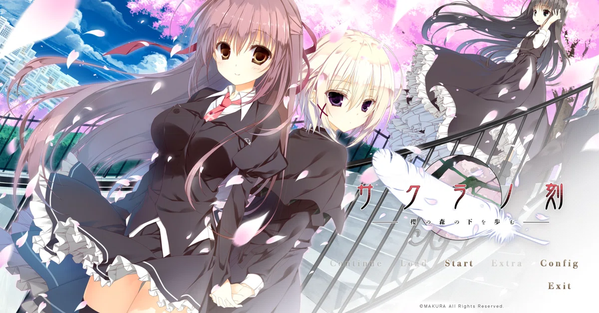
サクラノ詩 枕
空気力学といい櫻／詩といい、すかさんは本編だけじゃなくこういうところにも力を入れてくださるのも素晴らしいし嬉しい。この壮大感すげえわ
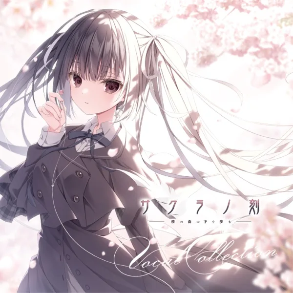
サクラノ刻 枕
刻と詩好きすぎる、超絶今一位の曲になった....1日50回くらい聴いてる、早くフル売ってくれ、高校の三年間ずっと飽きずに聴くぐらい櫻の詩が大好きだった、それを超えで好きになる曲なんて出ないと思ってたが松本文紀さん凄すぎるわマジで余裕で超えてきました...なにこの壮大軽快透明感動エモエモ曲
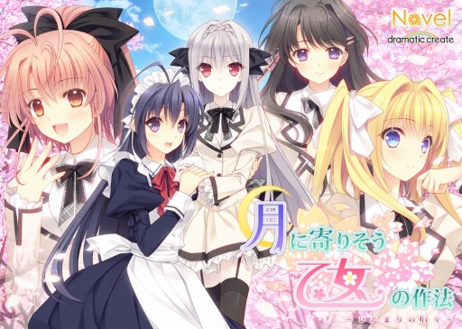
月に寄りそう乙女の作法 Navel
“近月者弯”
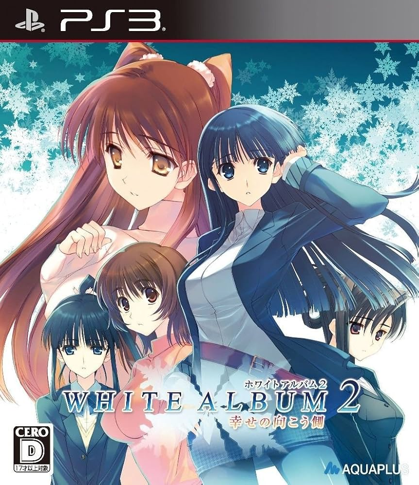
WHITE ALBUM2 Leaf
在学校推完《white album2》本体和后日谈，内心释然，走出教室，来到操场，无言远眺无边天幕，心中充满了抑郁和牵念。自《eden*》过后，我便好长时间没有在推过剧情作，原本以为身为拔作豚本应对刀啊什么的有了一定的免疫力，但这次推完WA2后却让我心里面极其不舒服，我一向很反对将游戏带入现实思考，但的确WA2让我体验到了很久未曾经历的失重感，总感觉心里沉淀着一个石头，这是之前的galgame很少让我能体验到的。有过提笔写点什么的冲动，但每当我提笔，我总会觉得无法真正写出我内心的那份震撼，那一份复杂、多样、晶莹剔透的情感，而不是这样的苍白无力。雪菜对感情积极追求，对友情坦诚相待。她不甘心自己的爱意落空，也不希望自己的朋友就此离开，为此雪菜想尽了办法。全文正是围绕这样的矛盾展开，这样仅仅的一方的一厢情愿终究会劳燕双飞，也促成了最后胃疼的结局，要解毒也只能推一推雪菜线的后续了。
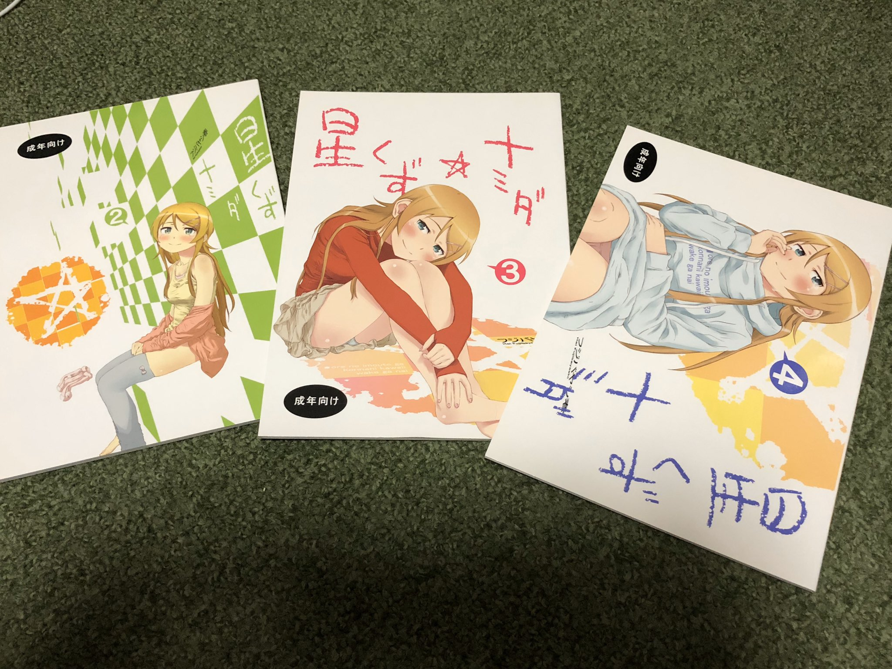
星くず⭐︎ナミダ フジバヤシ春
初めて同人誌に触れた作品かつ同人誌にハマるきっかけを作ってくれた作品で、1巻が永遠に見つからないことと未だに5巻を待ち続けて同人誌は一期一会であると痛感した作品
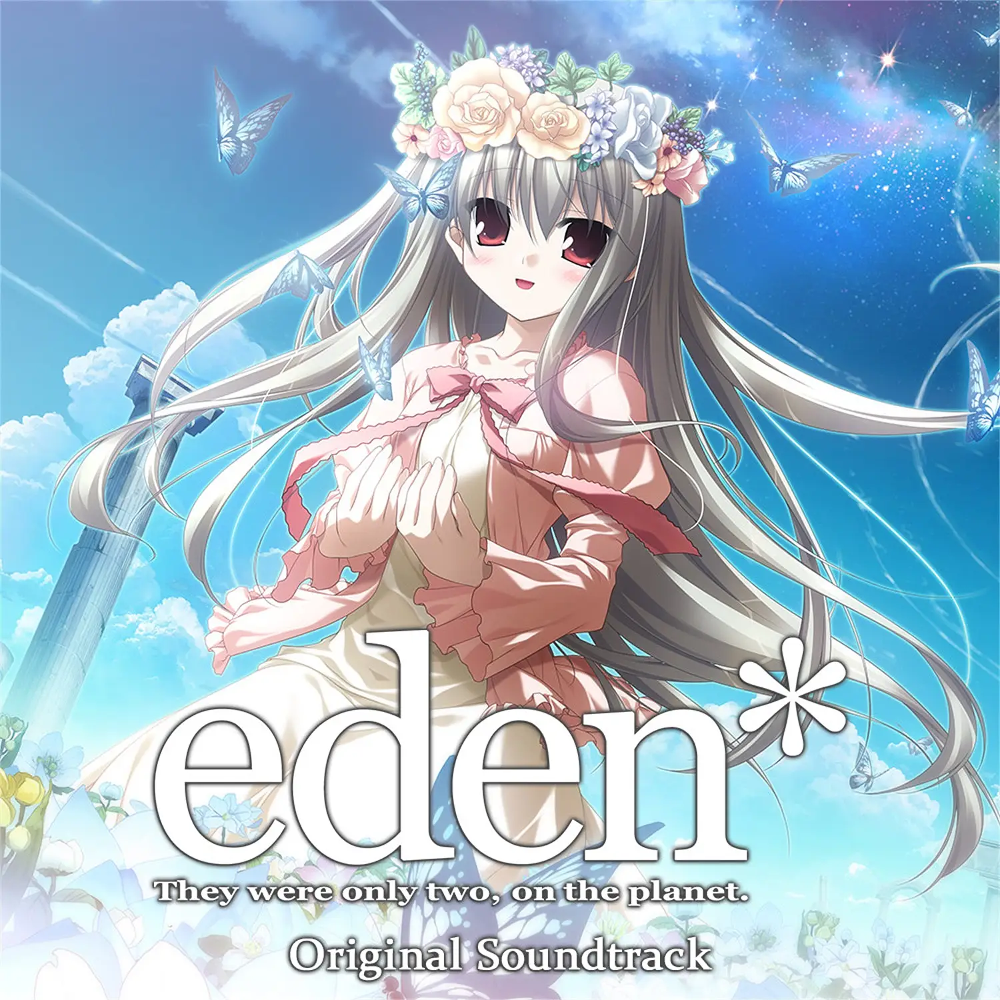
eden* monori
身为拔作豚，我已经很久没有玩到质量如此之高的作品了，打出了最终的end让我抑郁了很久，况且这还是一部全年龄向得到gal。也许，好的作品就像这样平平淡淡的叙述日常，真真切切的讲述故事。在单线的作品中作者都会去注重去调动玩家的感情而不是去展现各种各样的情节。所以，就像Eden一样，大部分单线作品并没有很复杂的剧情或者是很宏大的世界观，犹如一位经历过人间沧桑的老者，故事娓娓道来。
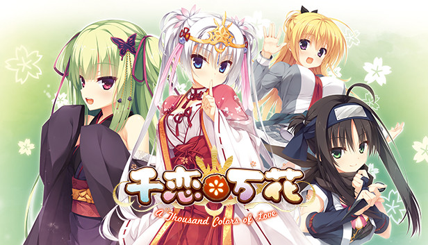
千恋*万花 ゆずソフト
幼刀天下第一！丛雨和芳乃两种对立性格十分鲜明，人设塑造完美，音乐也是柚子巅峰。玩了许多剧情作、猎奇作后重玩柚子，发现废萌才是gal的归宿啊。也许当初ACG作品的初心就是如此，去寻找现实生活中不曾拥有的感动。
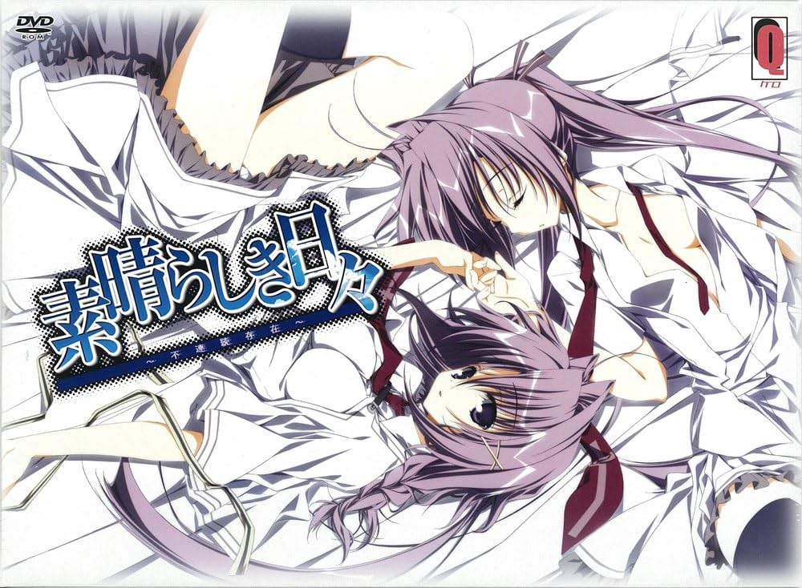
素晴らしき日々～不連続存在～ 枕
玩完之后的感觉，居然没有什么印象深刻的角色，也许不能这么说，但不如说每个角色都印象深刻。回归天空，天台决斗，夜晚的向日葵，教主的狂气。每个结局之后响起的在纳吉法尔的船上，贯穿整个故事的主题。也许我喜欢的是整个故事而不是故事的人物。想不明白，但是确实是值得一玩的作品 。松本文纪的音乐无敌，可惜游戏脚本里强加哲学，虽然加强了游戏的文学性，可不免有卖弄文字的嫌疑。我的第一部电波系galgame，也是有幸在秋叶原买到了实体典藏版，算是为情怀买单了吧。“人活着这件事，就拥有连其本身都能包含的深邃”因此，幸福地活下去吧，在这美好的每一天之中。
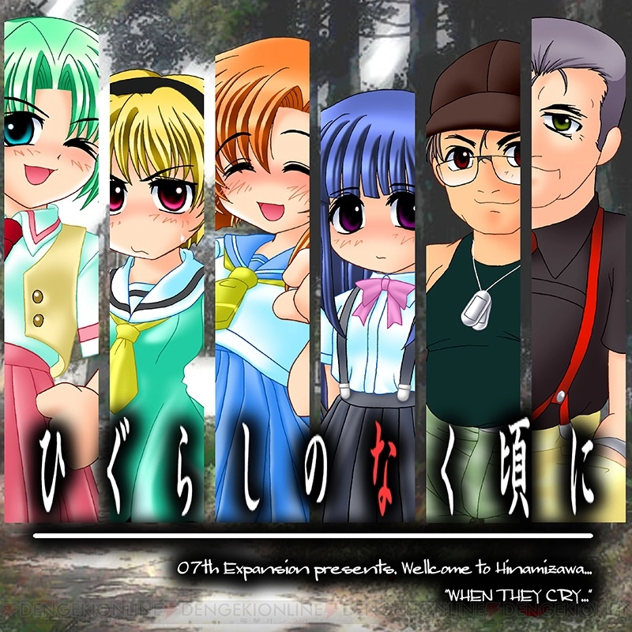
ひぐらしのなく頃に 07th Expansion
推海猫时就想着，如果换成龙绘我肯定是玩不下去的。寒蝉过程中切了几次龙绘看一眼，居然觉得有点喜欢。视觉小说同人作的巅峰之一。单线轮回方式，对出题篇的解答是略为复杂且隐晦的，同时展开扣人心弦的新剧情。只要相信伙伴同心协力就能势如破竹的总设定，在现实中虽然扯淡，但读起来却是那样的振奋人心。比起谜面与解谜，更强调坚定意志，挣脱命运枷锁，读者跟随龙骑士的文字燃到振奋不已一路冲向结局，不愧是日本三大同人之一的作品，神作！
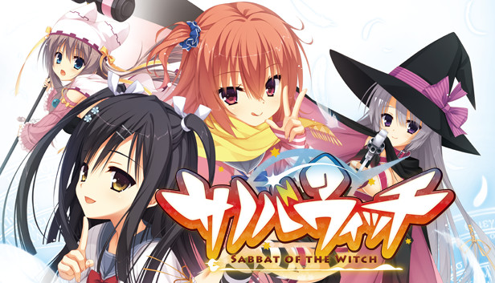
サノバウィッチ ゆずソフト
柚子社找到风格的一部作品。只推了宁宁线，这部游戏衍生出了很多出圈的梗，如“引爆器”、“0721”等，总体来说共通线比较无聊，如果不是绫地宁宁比较可爱很难有让人玩下去的欲望，中规中矩吧，宁宁加分。
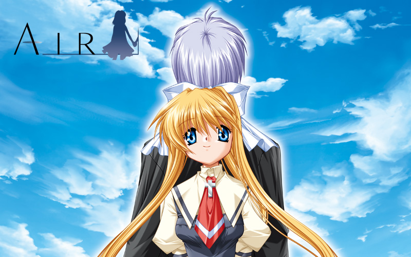
AIR key
确实是很好的作品，高中时熬夜把动漫看完了，但是看的不认真，到最后也没什么感触，人偶的寓意、跨越千年的爱恋更是没读懂，重玩游戏时像接触新剧情一样，不过现在总算重拾了这部作品的触动，本来感觉原作表现力会优于动画的。亲情是人类最重要的情感，最后一章神尾观铃站起来扑向主人公，伴随着鸟之诗响起时，我的眼眶是湿润的，宿命的相遇、带着创伤的女主角、传承和心意思念以及，亲情。尽管那只鸟还不能够展翅翱翔，但是总有一天它会迎风高飞，就像那个夏日挥洒在脸上的温热的阳光的触感，终将过去一般。
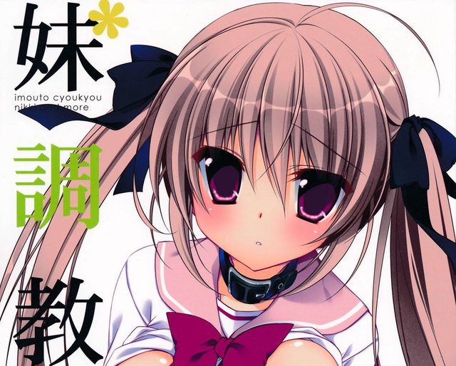
妹調教日記√happy end & another NANACAN
除了露出play稍微对点xp以外，其他简直无聊到没有必要细看的程度。因为十二神器慕名而来，可结果却令人失望，简直不能被称为商业作品，最多算质量一般的同人游戏。凌辱系爱好者可以尝试，妹控快跑。
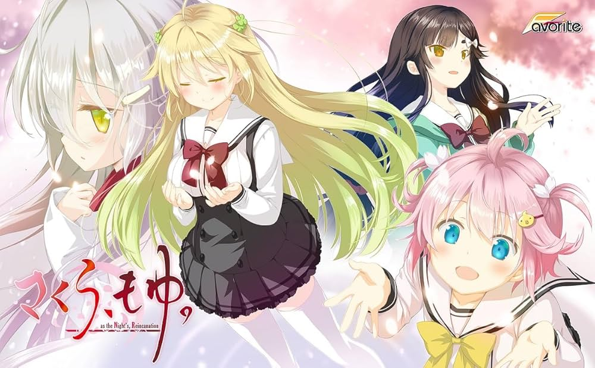
さくら、もゆ。-as the Night's, Reincarnation- FAVORITE
故事和氛围是真的好，温柔而感动，但日常着实无聊到了极点，雪人语也是让人读不明白，推了半年左右才总算摸完，主旨就是愿你的未来，永远有幸福的魔法相伴。至于友情啊、成长啊我是没有读懂，网上的评价比较两极分化。音乐神中神，一首さくら、Reincarnation我直接单曲循环无数次，去年在秋叶原也入手了原声OST。
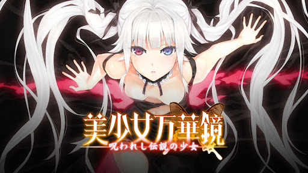
美少女万華鏡 -呪われし伝説の少女- ωstar
最喜欢的一部拔作，八宝备仁的画风涩到了骨子里，雾枝真的实用，白发双马尾，完美的xp，中间的play也很对胃口，剧情也不墨迹，开门见山直接进H。
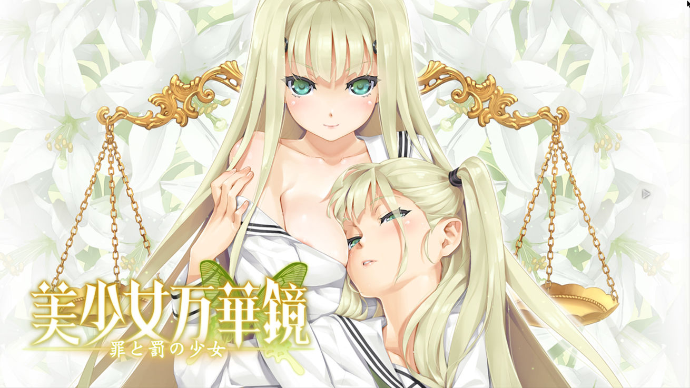
美少女万華鏡 -罪と罰の少女- ωstar
让人联想到了陀思妥耶夫斯基的《罪与罚》，同样是爱的救赎，同样是鸟笼中的爱恋。作为笼的冷漠密谋层叠串联，篇幅远不及作为爱的两人缠绵，却足以引人疑顿于到底是"爱扭曲为笼"还是"扭曲之笼为爱"。笼与爱交织缠结，融化在无法分辨是否为幸福的汪洋中。罪和爱纠缠产生了新的罪和爱，一切罪的根源却是所谓伦理，本篇拥有万花镜系列里最好的剧情。

ATRI -My Dear Moments- Front Wing
最近的动画化让前翼社的这部作品彻底出圈。单线纯爱作，一部十分适合新人的gal，cg和音乐都十分顶级，一定程度上增强本作较平庸的剧情的感染力。剧情远称不上神作，属于中规中矩的水平，可惜萌二太多，称之为gal界原神也不为过。
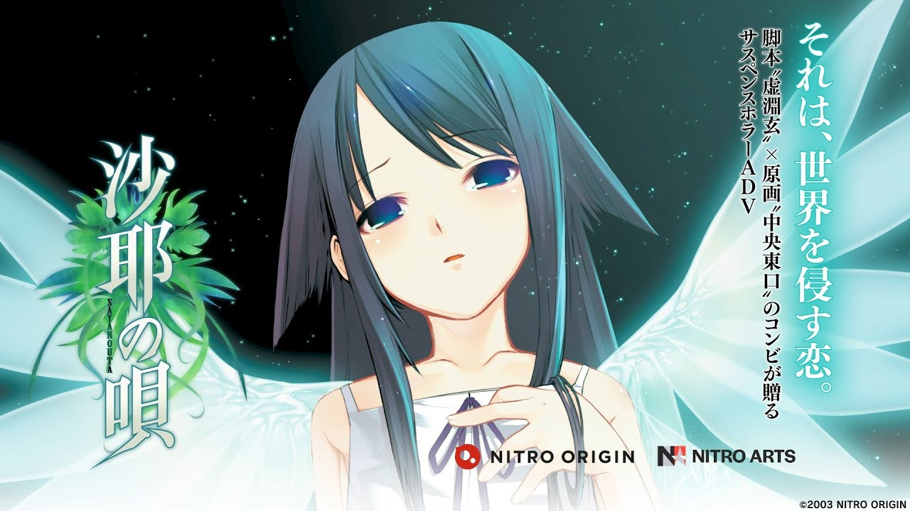
沙耶の唄 Nitro+
肉块与羽翼的交织，呕吐着歌唱。蛮不错的超短篇，五个小时以内就能全结局。本作讨论了人类的爱究竟是爱对方的表象还是灵魂？为数不多猎奇+纯爱的作品，除了虚渊玄我也就想得到和泉万叶了……这两位都喜欢在猎奇过后柳暗花明给出纯爱的结局（经典例子就是和泉老贼的SaDistic BlooD）。12神器里面非常值得一玩的作品。
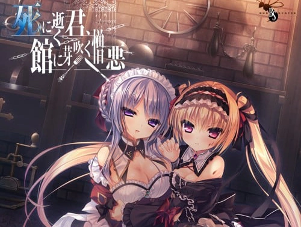
死に逝く君、館に芽吹く憎悪 バグシステム
十分喜欢画师るび様的画风，在油管上我也关注了好久。剧情的话就是偏废萌的无限炼奸，猎奇作品也就这样，玩多了也挺无聊的，不过るび様+和泉万叶确实是一个很奇妙的组合，萌哒哒的画风加上极致凌辱POV的剧情，这种差异感还是挺有意思的。
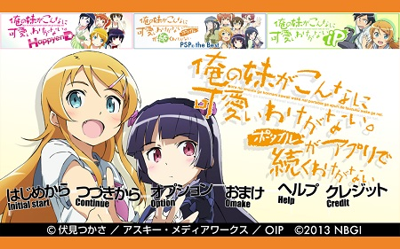
俺の妹がこんなに可愛いわけがない BANDAI
高中时在寝室晚上偷偷用PSP推完的。放在gal里也许比较普通，但确实是很不错的粉丝向作品，黑猫线的剧情让我很失望... 绫濑线好评！还有各种IF隐藏线还挺不错的，总的来说这系统玩法可以说是攻略难度比较高了，不看攻略有些地方很难打...本身原作小说的剧情就很轻松幽默，游戏弥补了不能攻略其他女主的遗憾。
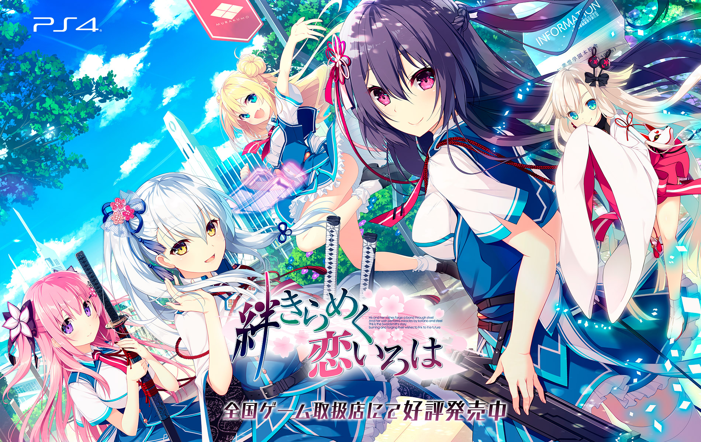
絆きらめく恋いろは CRYSTALiA
日常剧情过于无聊，全游戏看点全在白毛椿姐上面，算是勉强合格的废萌作品吧。
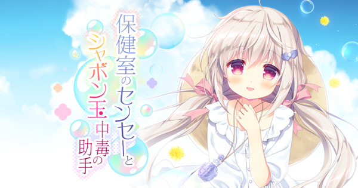
保健室のセンセーとシャボン玉中毒の助手 Citrus
一场跨越性别，跨越时空，跨越生死的永恒之恋，魂人与送归人的设定倒是蛮喜欢的，两个哥特萝莉都蛮对胃口的。画面质量很高，其余都是一般萌作的水平，结局有强行催泪的嫌疑，有很多强行讲大道理环节，但对着这优秀的作画，为了Loli冲就完事了。
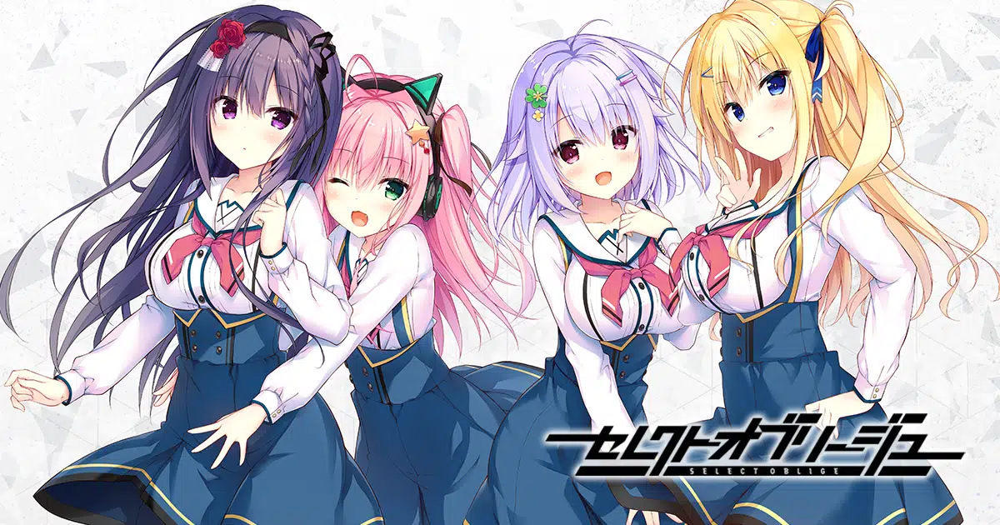
セレクトオブリージュ kuwa games
三分给原画，柚子奈的画风确实无敌。不过剧情拉跨，最初我是被游戏背景设定所吸引，参考该社前一作富婆妹，不过本作剧情有点过于无厘头，不带脑子当萌拔打图个乐呵还行，人设+原画还是不错的，剧本的某些scene写的真是尬的没边了
僕と恋するポンコツアクマ スミレ
抽象文案，慕名而来，「放学后我负责给你做菜。你负责给我做爱，少一天不做就饿你一天!」「以后你要是背着我打飞机，我会很生气超级生气!那是对女朋友的侮辱!哪怕是翻垃圾桶也要把你射的吃掉!」拔作就不要太较真剧情了，实用度很好
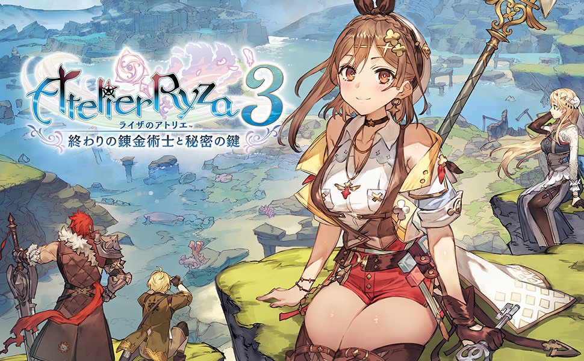
ライザのアトリエ3 ~終わりの錬金術士と秘密の鍵~ ガスト
与前几作相比，地图变大了但是利用率降低了，而且没用起来的地图逛起来也并不爽，收获也不多，宝箱更是重量级，到处搜刮根本没有什么特别珍贵的东西，所以到中后期基本没有探索欲望了，炼金系统是本作的创新点，可惜不对我胃口，堆品质堆词条都不如钥匙开光过的道具来的实在，剧情全程平铺直叙，但是最后还是感动到我了，看着一个完整的系列落下帷幕就该是这种感觉。但作为开放世界来说不如原神。
没有找到相符的短评。